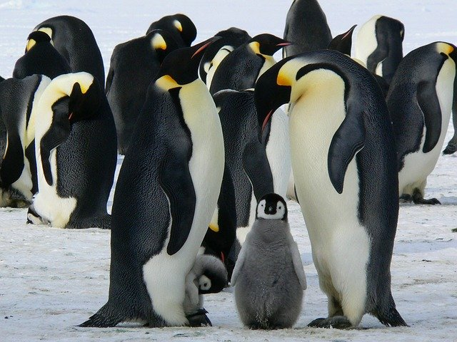
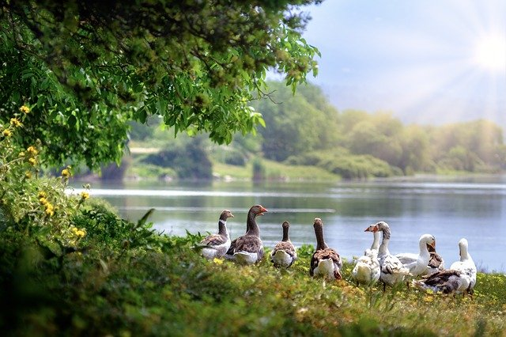

WELCOM FOR TRAKER
Estamos organizando un plan para ls montañas mas altas del alpes donde se integraran por grupos donde el mejor competidor se levara un fantistico premio
esperamos los participantes mas competitivos
participartes segunda etapa
finalistas primera parte
campeanes de la primera etapa
estaremos buscando mas competiciones por ganadores en otros paises que han convado mas champions traker


